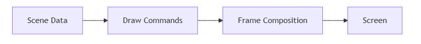
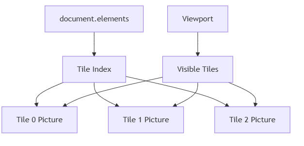
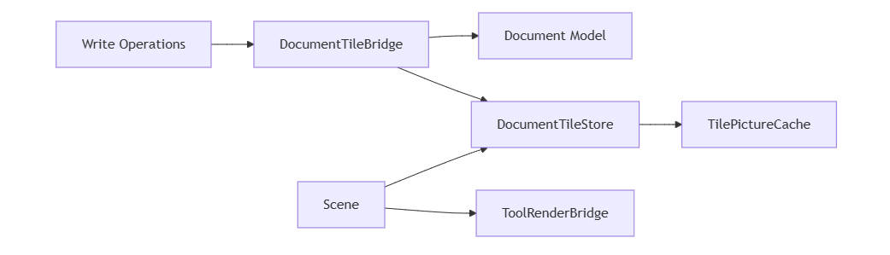
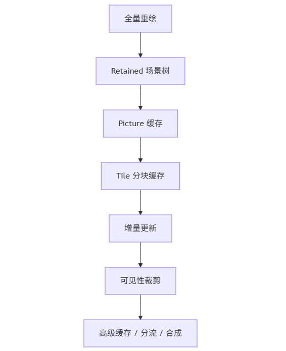

当一个画布开始支持平移、缩放、海量图元、临时预览、局部编辑时，渲染性能问题几乎一定会出现。
最开始，大家通常都会写出一个“能跑”的版本：每次都把全部元素重新画一遍。这个版本简单、直接、容易验证正确性，但很快就会遇到瓶颈。接下来，系统通常会经历一系列演化：从全量重绘，到 retained scene tree，到命令缓存，再到 tile 分块缓存和增量更新。
这篇文章想回答三个问题：
文中默认的场景是：
先说一个很重要的结论：
大多数绘制系统在每一帧最终都需要得到“当前帧的完整画面”，但这不等于每一帧都要“全量重建所有绘制数据”。
这两件事要分开理解：
这里先解释一下“绘制命令”这个词。
可以把它理解成一组非常具体的画图步骤，比如：
(10, 10) 到 (100, 10) 之间画一条线(40, 50) 处画一个宽 80、高 60 的矩形2这些“画什么、画到哪里、怎么画”的具体指令，加在一起，就是绘制命令。
所以渲染系统真正做的事情，通常不是直接操作“业务对象”，而是把业务对象转换成可执行的绘制命令，再交给底层绘制引擎。
一个高性能渲染系统的关键，不是避免“当前帧出图”，而是尽量避免“重复构建稳定内容”。
可以把绘制过程抽象成三层：

所以，性能优化真正优化的不是“当前帧是否要显示出来”，而是：
如果换一种更工程化的说法，就是：
最直观的实现是：
elements[]伪代码：
function render(canvas, elements, viewport) {
clear(canvas);
applyViewport(canvas, viewport);
for (const element of elements) {
drawElement(canvas, element);
}
}
这种方案的优点是：
但缺点也很明显：
如果元素数量是 N，那么每次 render 的成本接近：
O(N)对于 CAD、地图、流程图、白板这类大画布应用，这是第一阶段几乎必然会撞到的瓶颈。
你会发现一个典型现象：
从“正确性”角度它没有问题，但从“效率”角度，这显然是在重复做稳定工作。
第二阶段通常会转向 retained mode。
思路是：
Group transform 统一变换例如：
<Canvas>
<Group transform={viewportTransform}>
{elements.map((element) => renderNode(element))}
</Group>
</Canvas>
这个阶段的优势在于，系统开始把“场景结构”和“当前帧出图”分离：
但它并不意味着“内部完全冻结”。
更准确地说：
这点和 Three.js、原生 UI scene tree 很像：
当 element 数量很多时，问题会变成：
这里的“处理子节点”并不是说每次都把子节点从头创建一遍，而是指这些子节点通常仍然要参与当前帧的渲染流程，例如：
也就是说，retained 方案解决的是：
但它还没有完全解决：
这就是为什么第三步之后，通常还需要第四步：
也就是：不只是把对象留在场景树里，而是把一部分稳定内容提前录好，后面直接复用。
这里要特别强调一个容易混淆的点：
第四步不是“给每个 child 都单独缓存一个 picture”，而是“把一组稳定的 child 合并成一个更粗粒度的 picture”。
如果只是每个 child 各自缓存 picture，但每一帧仍然要：
drawPicture(child.picture)那么第三步里最主要的处理成本其实并没有真正减少。
所以第三步和第四步的真正区别是：
比 retained 更进一步的优化，是把一组稳定内容的绘制结果描述提前录下来，并在后续帧中直接复用。
以 Skia 为例，可以把一组绘制命令录制成 SkPicture。
你可以把 SkPicture 理解成：
于是渲染逻辑会变成：
const picture = recordScene(elements);
function render(canvas, viewport) {
clear(canvas);
applyViewport(canvas, viewport);
canvas.drawPicture(picture);
}
这已经非常接近“冻结绘制内容”的思路了：
换句话说，第四步相当于把第三步里“很多子节点”进一步合并成“一个更粗粒度的可复用单元”。
如果说第三步更像：
那么第四步更像：
因此，第四步相比第三步真正减少的工作是：
这就是第四步的真正优化点。
如果整个文档都录成一张大 picture：
也就是说，第四步解决了“不要每次都逐个处理子节点”的问题，但还没解决另一个问题：
一旦只改了文档里很小的一块区域，却要重录整张大 picture，就会产生新的浪费。
所以如果场景继续变大，就必须继续问一个更细的问题：
缓存应该缓存到什么粒度？
整张文档一张 picture，通常仍然太粗。
这是很多中大型 2D 编辑器、地图类应用、大画布系统里最实用的一步。
核心思路：

最终 render 的形态：
<Canvas>
<Picture picture={gridPicture} />
<Group transform={viewportTransform}>
{visibleTiles.map((tile) => (
<Picture key={tile.id} picture={tile.picture} />
))}
</Group>
<Picture picture={toolPicture} />
</Canvas>
这套方案的关键收益不在于“从此完全不重绘”，而在于把问题从：
变成：
于是最终开销会集中在“局部缓存命中”和“局部重建”上。
这一步是在第四步基础上的继续优化：
于是它补足了第四步的两个短板：
这套方案的关键收益：
原始方案：
O(N)Tile 方案：
O(V)V 是可见 tile 数量，而不是元素总数只要 tile 粒度设计合理，V 通常会远小于 N。
所以第五步其实是在第四步的基础上继续细化：
这样带来的改进是：
你可以把这两步的关系理解成：
对每个 element，先计算 world-space bounds：
再根据 tileSize 计算它覆盖哪些 tile。
例如：
minCol = floor(minX / tileSize);
maxCol = floor(maxX / tileSize);
minRow = floor(minY / tileSize);
maxRow = floor(maxY / tileSize);
然后把这个 element 分配到所有覆盖的 tile。
会，如果处理不当。
例如一条长线跨过两个 tile：
如果不做处理，重叠区域会重复上色。
正确做法是：
也就是：
canvas.clipRect(tileBounds);
drawElementsInsideTile();
这样每个 tile 只画自己区域内的内容。
这里有一个非常重要的工程判断：
所以“多 tile 分配 + tile clip”必须成对出现。
很多 tile 架构一开始会犯的错误是：
sync(document.elements)这会导致：
不要在 render 里做全量同步，而要改成：
伪代码：
tileStore.addElement(element);
tileStore.addElements(elements);
tileStore.removeElement(id);
tileStore.updateElementGeometry(element);
tileStore.clear();
这样 render 就只做：
而不再负责：
这一步对性能提升非常关键，因为它把系统真正分成了两条路径：
一旦这两条路径分开，viewport 变化就不再天然等于“全量同步”。
一个干净的 tile 渲染系统，通常会拆成这些对象：
DocumentTileStore #职责：
TilePictureCache #职责：
TileRenderer #职责：
VisibleTileResolver #职责：
DocumentTileBridge #职责：
Scene.render() 中做全量同步
这个拆分的价值在于：
最基础的 Canvas 2D 常见做法是：
如果项目复杂了，业务层通常会自己引入：
也就是说，Canvas 2D 本身不会自动帮你做高层缓存，优化要自己设计。
Skia 既支持 retained mode，也支持 immediate mode。
而 SkPicture 则提供了一种非常适合做缓存的中间形态：
tile picture cache 就是在应用层利用这点做出来的。
Three.js 的 scene graph 是 retained 的：
但 Three.js 也不是天然“把整棵子树冻结成一张位图后只平移”。
如果要真正达到类似“freeze drawing”的效果，通常也要借助：
所以从思想上说，tile cache 更接近：
浏览器、iOS Core Animation、Android RenderThread 等成熟引擎，通常都在做类似的事：
不同之处只在于：
把整个过程抽象出来，渲染系统通常会沿着下面这条路线演化：

可以看到，优化不是一次性的“开个开关”，而是逐层降低“每帧必须重新做的事情”。
真正高性能的核心问题始终是：
哪些内容是稳定的？ 哪些内容是变化的？ 如何只更新变化的部分？
如果你正在实现一个类似 CAD、白板、流程图、地图的系统，可以按这个顺序思考：
不要一开始就上最复杂方案，但也不要把所有性能问题都寄希望于一个框架的“自动优化”。
真正决定性能上限的，往往是你如何组织：
渲染优化的本质，并不是“让画面不再重绘”，而是：
从全量重绘，到 retained scene graph，再到 tile picture cache，本质都是在回答同一个问题：
如何把一帧里真正需要做的工作，压缩到最少。
如果站在这个角度去看，不同绘制引擎之间的差别，更多只是：
而优化思路本身，是共通的。
如果把全文压缩成一句话，那就是：
渲染引擎的优化，不是逃避当前帧，而是尽量少做当前帧里本不该重复做的工作。
这也是从全量重绘，走向 retained tree、picture cache、tile cache、增量更新的真正内核。
（完）